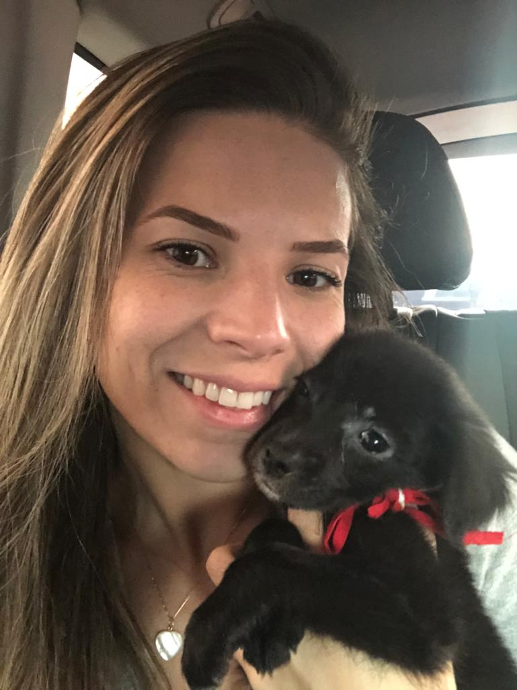
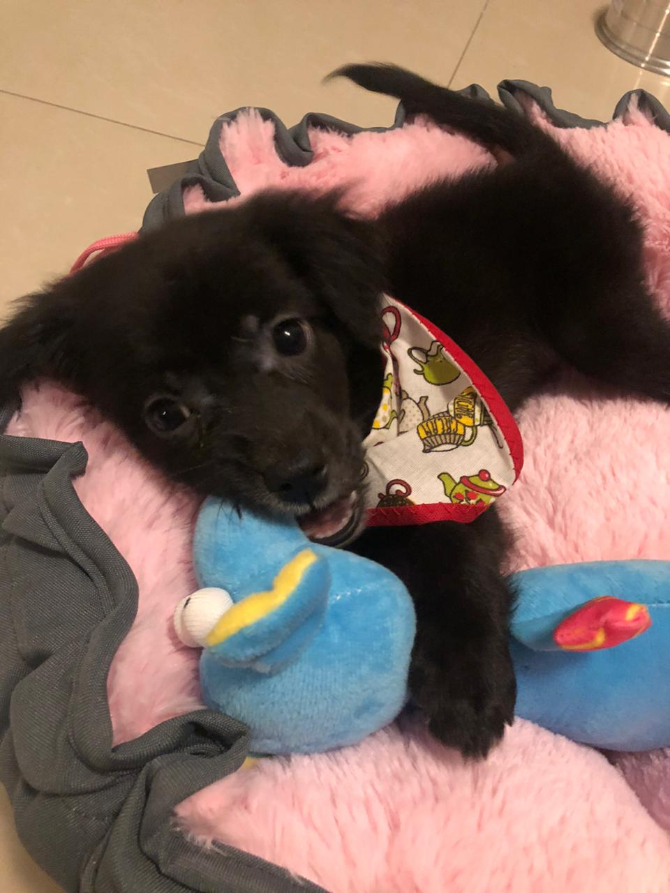
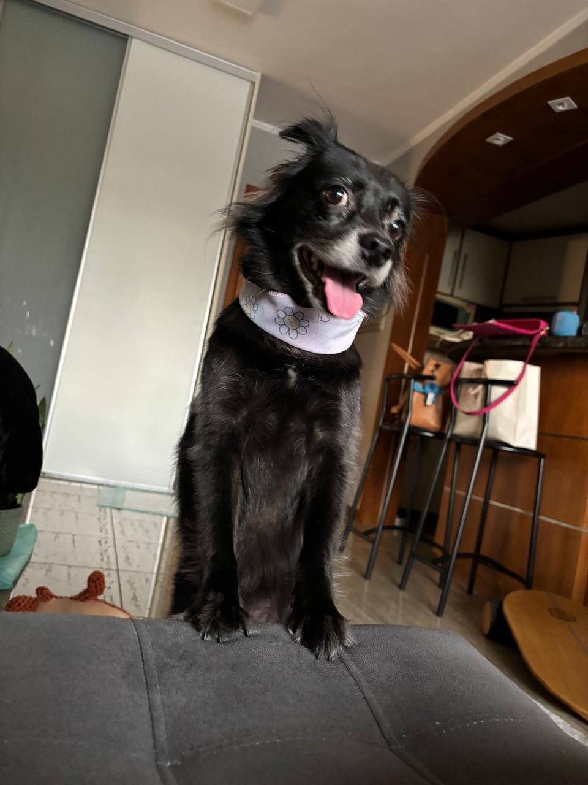
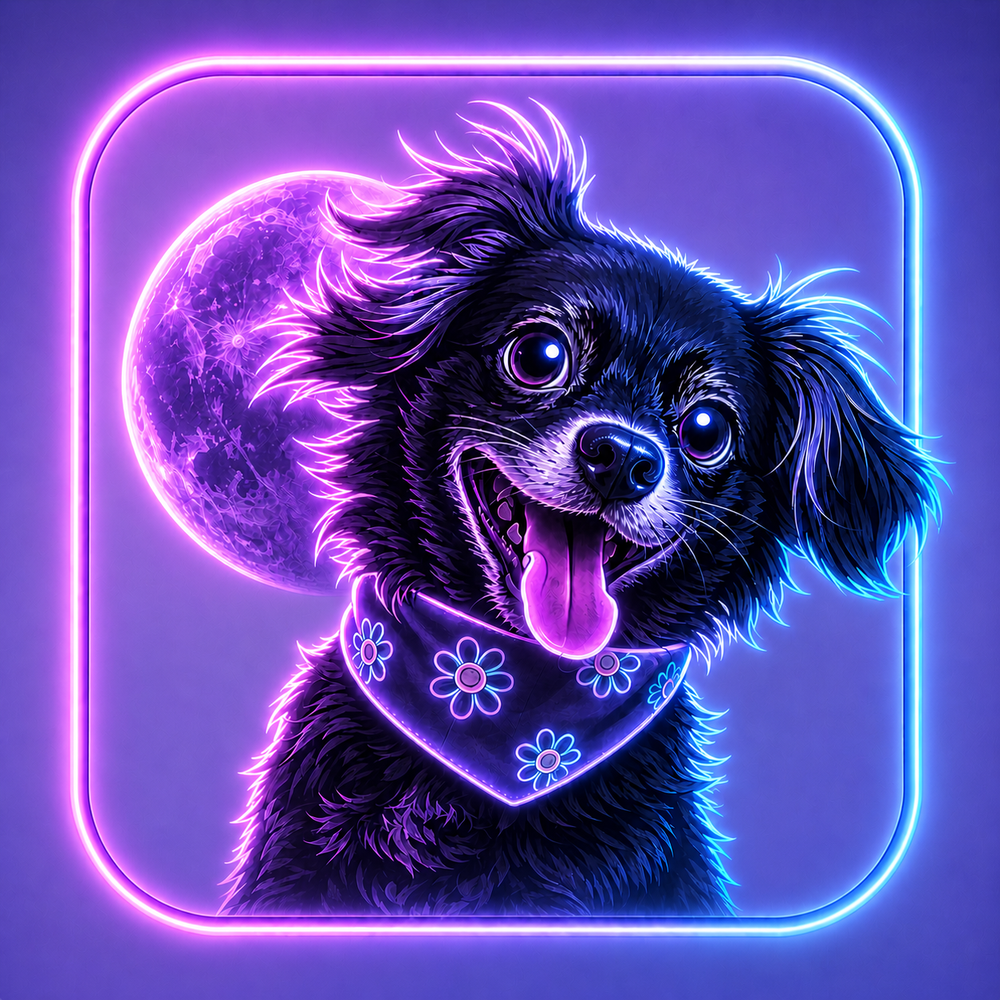
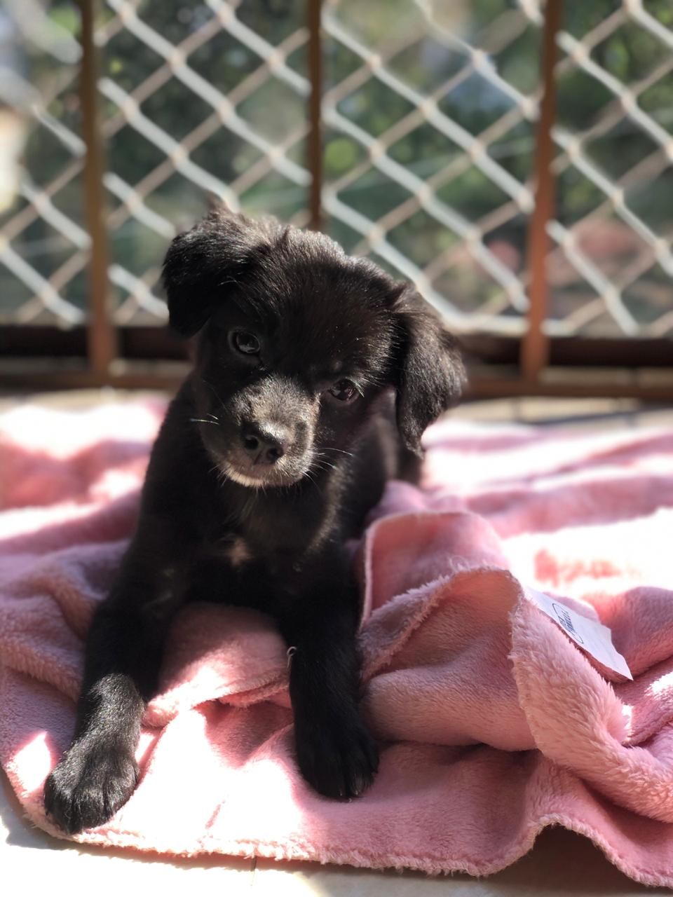
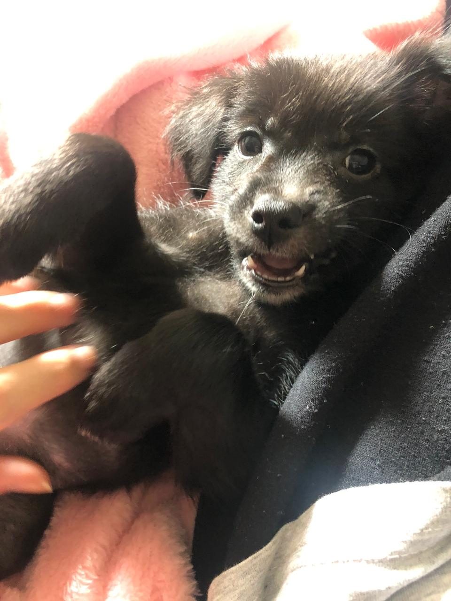

Este app não nasceu para resolver sua vida.
Nasceu para guardar melhor o que é seu.
Existem ótimos apps de agenda, finanças e organização — e tudo bem.
Aqui, o centro é a sua biblioteca pessoal, um segundo cérebro: notas, tarefas, contas, documentos e memórias.
Sobre esse conteúdo, só o seu, uma IA ajuda você a buscar, cruzar e lembrar. Com fonte. Sem mágica.
Lançar uma conta ou marcar um compromisso, qualquer app faz. A diferença é essa biblioteca.
Essa é a Pinah. Minha cachorrinha de verdade: 6 anos, vira-lata, que chegou em casa em 2020 com só 45 dias.
Adora gente. Sempre que a gente chega, ela vem receber com um brinquedo na boca — alegre, do jeito dela.
Ela já era companhia antes de virar ideia.
Depois, o nome revelou uma coincidência bonita: P-IA-NAH.
A Pinah virou a assistente do app porque fazia sentido. Quem cuida da memória da gente também precisa ter um rosto de confiança.




A Pinah não quer, de forma alguma, alterar ou sugestionar o seu próprio conhecimento.
O que ela pretende é auxiliar você a encontrar aquele livro que você colocou na imensa biblioteca que você chama de cérebro — de forma rápida e organizada, poupando tempo nessa árdua tarefa de busca.
Para que você desfrute desse tempo para o que realmente importa: viver.
A Pinah cuida. Você vive.
me pergunta o que quiser
seu segundo cérebro
seus compromissos no lugar
suas contas sob controle
o que precisa ser feito

